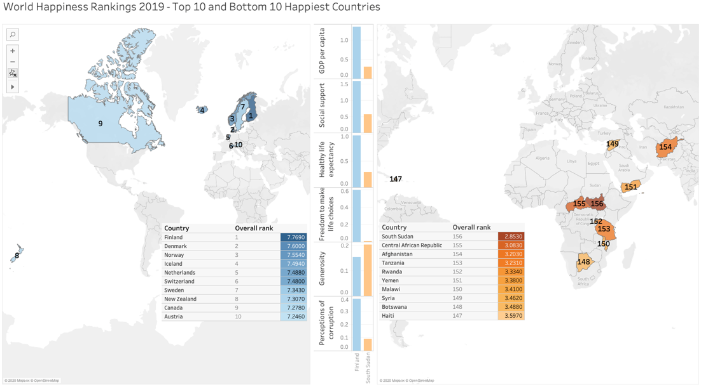

World Happiness Rankings 2019 - Top 10 and Bottom 10 Happiest Countries
Visualisation in Support of the Linear Regression Model

In this project, I have used Tableau to explore and visualise insights into the ranked happiest and unhappiest countries in the world in 2019.
This project was part of my Master's Degree coursework.
November 2021